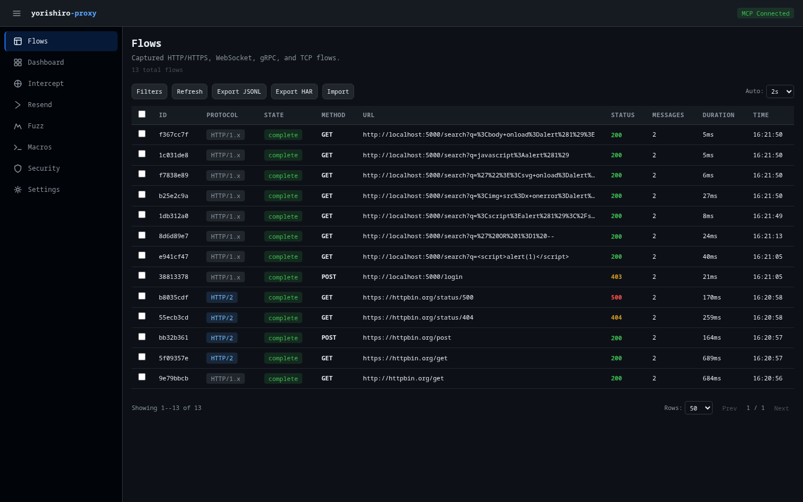

Flows¶
The Flows page is the primary interface for browsing captured network traffic. It displays all HTTP/1.x, HTTPS, WebSocket, HTTP/2, gRPC, and TCP flows in a paginated, filterable table.

Flow list¶
The main table shows one row per captured flow with the following columns:
| Column | Description |
|---|---|
| ID | First 8 characters of the flow's unique identifier |
| Protocol | Color-coded badge (HTTP/1.x, HTTPS, WebSocket, HTTP/2, gRPC, TCP, SOCKS5+HTTPS, SOCKS5+HTTP) |
| State | active, complete, or error |
| Method | HTTP method (GET, POST, etc.) or blank for non-HTTP protocols |
| URL | Full request URL |
| Status | HTTP response status code, color-coded by class (2xx/3xx/4xx/5xx) |
| Messages | Message count (relevant for WebSocket and TCP flows) |
| Duration | Request-response round-trip time |
| Time | Timestamp when the flow was captured |
Click any row to navigate to the flow detail view.
Filtering¶
Click the Filters button in the toolbar to reveal the filter panel. You can filter by:
- Protocol -- Radio buttons for HTTP/1.x, HTTPS, WebSocket, HTTP/2, gRPC, TCP, SOCKS5+HTTPS, SOCKS5+HTTP, or All
- Method -- Dropdown for GET, POST, PUT, DELETE, PATCH, HEAD, OPTIONS
- Status -- Dropdown for specific status codes (200, 301, 400, 500)
- Flow state -- Dropdown for active, complete, or error
- Scheme -- Dropdown for
https,http,wss,ws,tcp - Host -- Text input to filter by target hostname (debounced)
- Blocked by -- Dropdown for
target_scope,intercept_drop,rate_limit,safety_filter - URL pattern -- Text input with debounced search (300ms delay)
- Body contains -- Text search within response bodies
- Tag -- Filter by flow tag
The query API also supports technology and conn_id filters, which can be used via the MCP query tool.
Filters are applied in combination. When any text filter changes, the pagination resets to page 1 automatically.
Auto-refresh¶
The flow list supports configurable auto-refresh polling. Use the Auto dropdown in the toolbar to set the polling interval:
- Off (manual refresh only)
- 1s, 2s, 5s, or 10s
The default polling interval is 2 seconds. You can also click Refresh to manually reload the list.
Sorting¶
Click the Duration or Time column headers to sort the flow list by that field. Click again to clear the sort. A downward arrow indicator appears next to the active sort column.
Selecting flows¶
Each row has a checkbox for multi-select. Use the header checkbox to toggle select-all for the current page. When flows are selected, a bulk actions bar appears with the following options:
- Export HAR -- Export selected flows as a HAR file
- Delete -- Delete selected flows (with confirmation dialog)
- Clear -- Clear the selection
Flow detail view¶
Clicking a flow row navigates to the detail page (/flows/{id}), which shows the full request and response data. The detail view includes:
- Request headers -- Displayed in a key-value table
- Request body -- With syntax-highlighted viewer
- Response headers -- Displayed in a key-value table
- Response body -- With content-type-aware rendering
- Connection info -- TLS version, server address, timing data
For HTTP/2 and gRPC flows, the detail view also shows pseudo-headers (:method, :path, :authority, :scheme) and stream information.
Raw tab¶
When raw bytes are available for a flow, a Raw tab appears alongside the Headers and Body tabs. The Raw tab provides a hex dump view and a text view of the wire-observed bytes, giving you visibility into the exact data as captured on the network.
- Toggle between Hex and Text display modes
- Hex mode shows a standard hex dump with offset, hex values, and ASCII representation
Size safeguards
The raw bytes editor shows a warning when the payload exceeds 64 KB. The hex editor is disabled entirely when the payload exceeds 1 MB -- use Text mode for large payloads.
WebSocket message list¶
For WebSocket flows, an enhanced message list replaces the standard message table. Each frame row displays:
- Sequence number --
#1,#2, etc. - Direction arrow -- green upward arrow for send (client-to-server), blue downward arrow for receive (server-to-client)
-
Opcode badge -- color-coded by frame type:
Opcode Badge color Text Green (success) Binary Blue (info) Close Red (danger) Ping Yellow (warning) Pong Yellow (warning) -
Size -- human-readable byte size
- Timestamp -- time with millisecond precision
- Content preview -- truncated payload preview
Click a message row to expand its detail panel, which provides:
- Binary messages -- Toggle between Hex dump and Base64 display modes
- Text messages -- Automatic JSON detection with Pretty / Raw toggle for JSON payloads
- Close frames -- Parsed status code with description (e.g.,
1000 Normal Closure) and close reason text - Metadata -- All frame metadata (opcode, masked, fin, etc.) displayed as key-value pairs
Export options¶
From the detail view, you can:
- Copy as cURL -- Generate a cURL command that reproduces the request
- Export HAR -- Download the flow as a single-entry HAR file
- Resend -- Navigate to the Resender page with the flow pre-loaded
Exporting flows¶
The toolbar provides two export options:
- Export JSONL -- Exports all flows (server-side) as a JSONL file via the
managetool withexport_flowsaction - Export HAR -- Downloads selected flows (or all visible flows if none selected) as a HAR file directly in the browser
Importing flows¶
Click Import to open the import dialog. You can import flows from a JSONL file stored on the server:
- Enter the server-side file path (e.g.,
/path/to/flows.jsonl) - Choose a conflict policy:
- Skip -- Keep existing flows when IDs conflict
- Replace -- Overwrite existing flows
- Click Import
The dialog displays import results including counts of imported, skipped, and errored entries.
Pagination¶
Below the table, pagination controls let you:
- Navigate between pages with Prev / Next buttons
- See the current page position (e.g., "1 / 5")
- Change the number of rows per page (25, 50, or 100)
- See the total flow count and current range
Related pages¶
- Concepts: Flows -- Understanding the flow data model
- Flow export & import -- Detailed export/import documentation
- query tool -- MCP tool used by this page